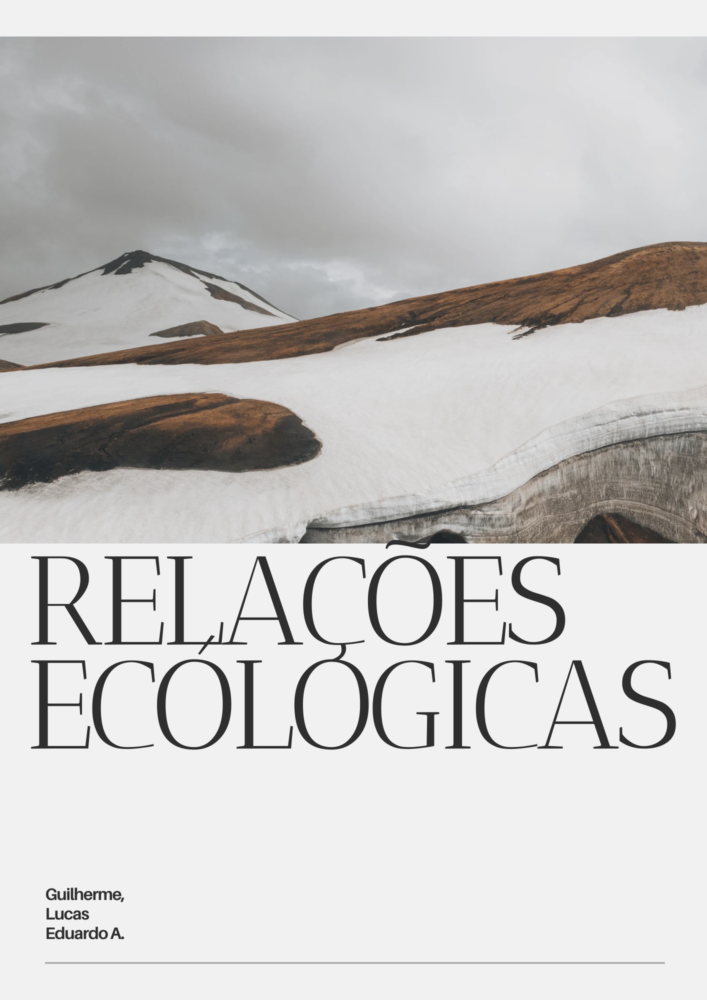

Atividades de Ciências da Natureza
Nessa atividade confecçionamos em grupo um circuito utilizando materias disponibilizados pela escola, em seguida respondemos perguntas em um documento baseado em nossas observações da atividade pratica.
Habilidades: C2, H6, C6, H34.
 Potência e Energia Elétrica
Potência e Energia Elétrica
Fiz em grupo uma apresentação sobre nosso consumo de energia.
Habilidades: C2, H6, C6, H34.
 Revisão organica
Revisão organica
Produzi uma apresentação em slides revisando os conteúdos de quimíca orgânica trabalhados em aula.
Habilidades: C1, H3, H4, H5.
 Evolucionismo
Evolucionismo
Nessa atividade fizemos um meme sobre o evolucionismo e um estudo de caso evolutivo utilizando um simulador.
Habilidades: C2, H6, C6, H34.
Mapa mental circuitos elétricos
Criei um mapa mental sobre os componentes que compõem um circuito elétrico
Habilidades: C6, H35
 Revista ecológica
Criei uma revista que apresenta os conceitos de relações ecológicas incluindo fotos e vídeos que ilustrem cada uma delas
Habilidades: C3, H15, H18
Cartaz Uso de copos plásticos no sesi
Elaborei em grupo um cartaz conscientizando sobre o uso de plásticos no sesi e seus efeitos para o meio ambiente.
Habilidades: C3, H15, H18
Nada aqui por enquanto